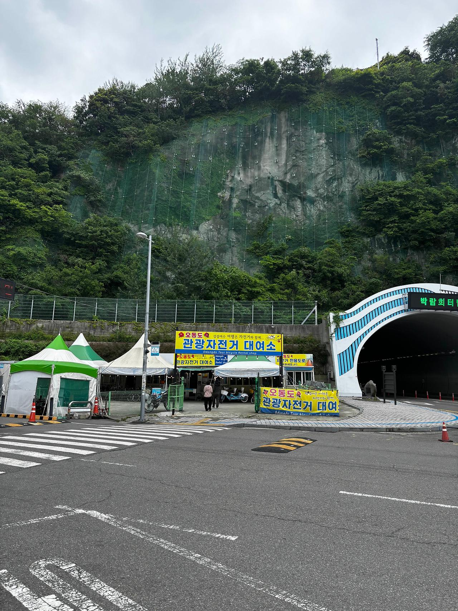
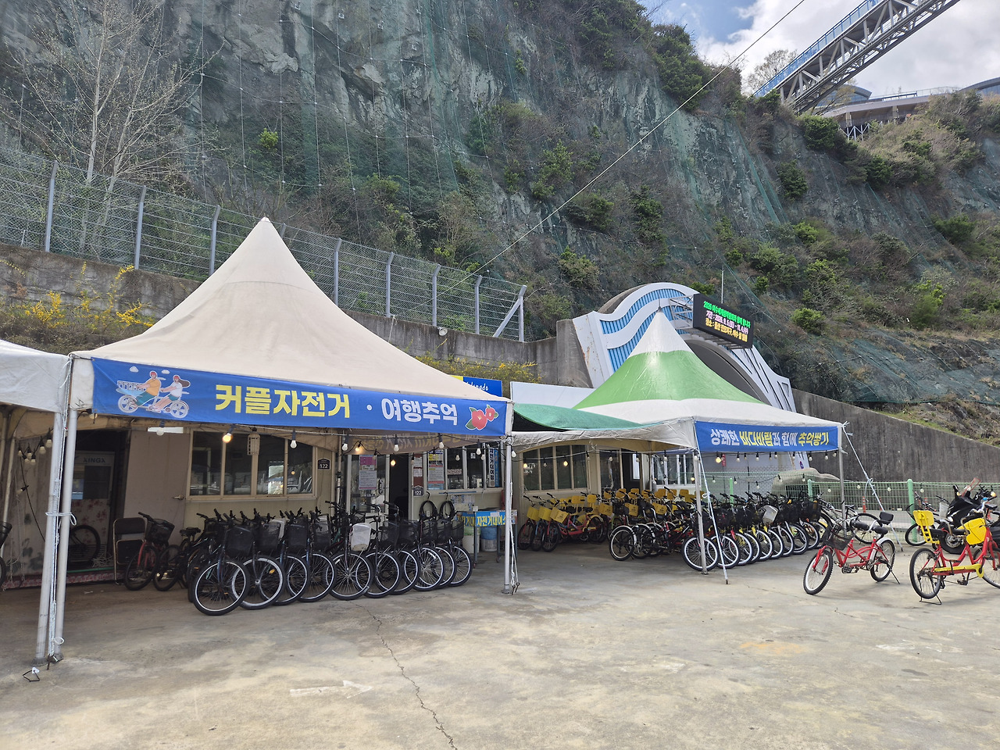
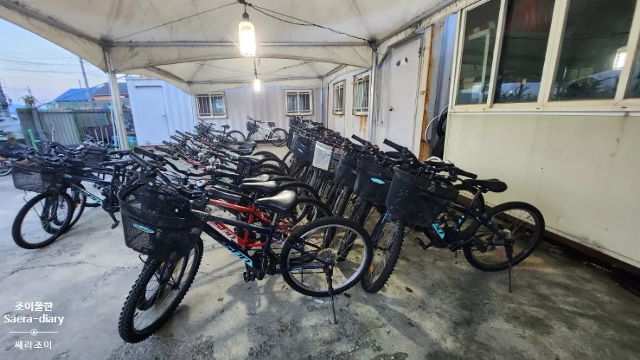
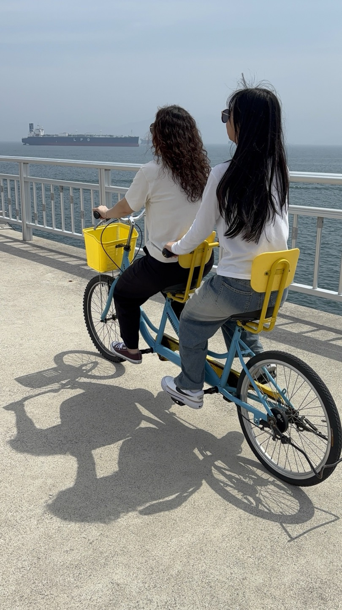
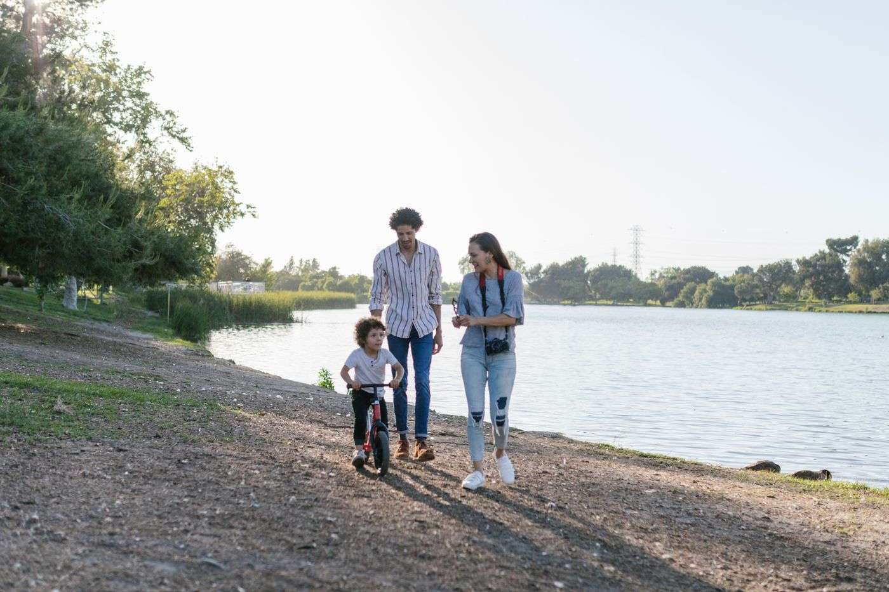
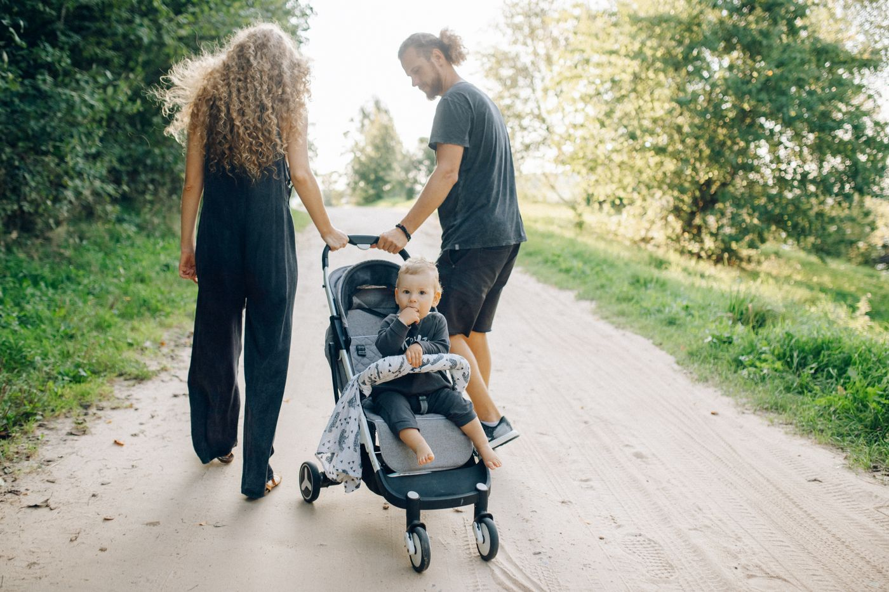
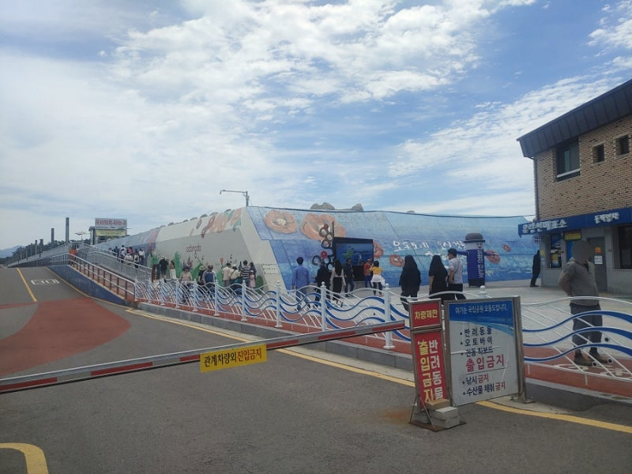
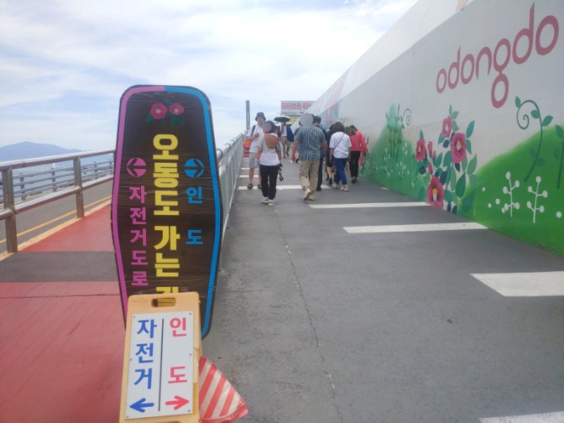
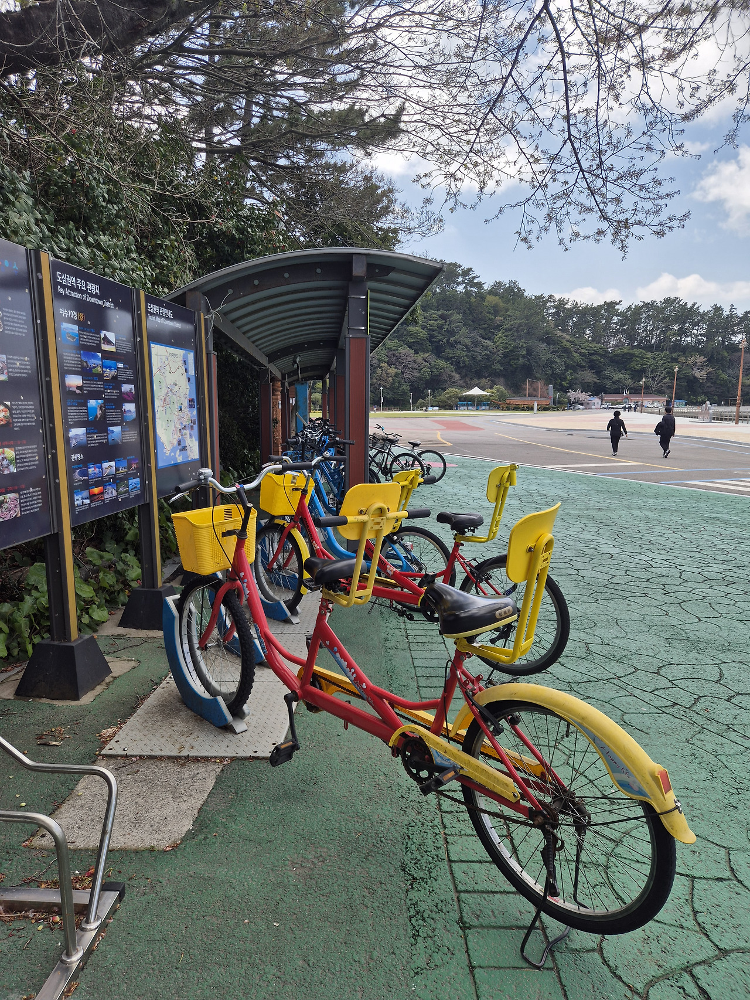
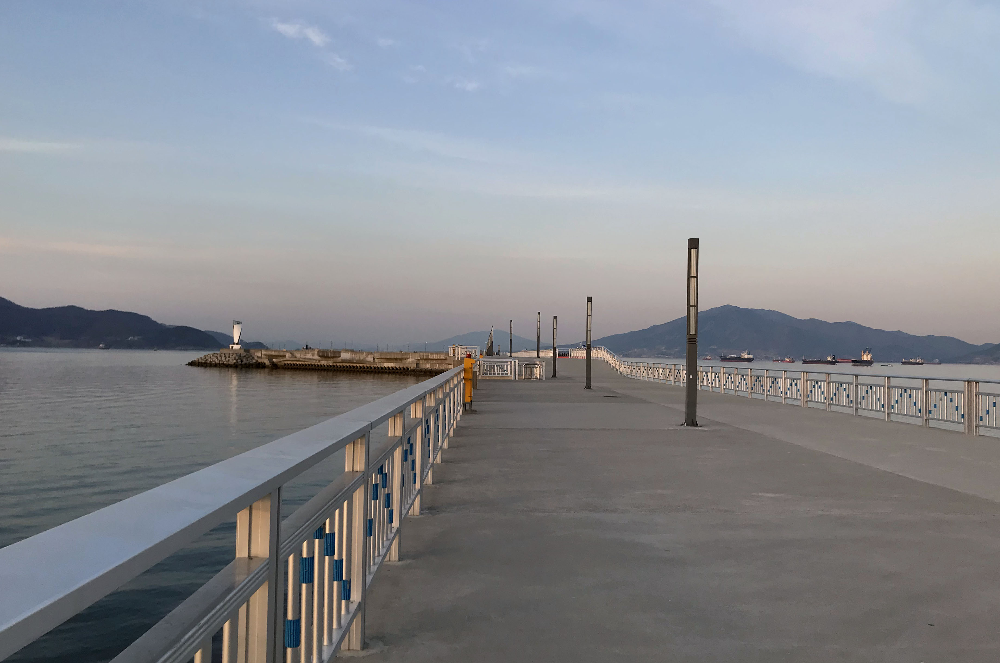

일반 자전거
1인승. 바구니 달린 자전거로 방파제·해안길을 달립니다. 자물쇠를 함께 드립니다.
- 요금
- 1인당 위 표
오동도 일상에서 여행은 자전거와 함께 관광자전거 대여소 Odongdo Tour Bicycle Rental Shop
박람회터널 옆 오동도로 122. 일반·커플·어린이 자전거와 유모차까지.
요금은 1인당입니다. 우천·강풍 날은 조기 마감할 수 있으니 출발 전 전화 주세요. 여수시 공영자전거(여수랑)와는 다른 민간 대여점입니다.
010-5135-4004


Rental
요금은 타는 사람 1명 기준입니다. 커플자전거도 인원수만큼 계산합니다.
예) 성인 2명 · 1시간 → 11,000원 / 성인 2명 · 2시간 → 22,000원
1인승. 바구니 달린 자전거로 방파제·해안길을 달립니다. 자물쇠를 함께 드립니다.

2인승. 방파제에서 사진 찍기 좋고, 등대까지는 여유 있게 2시간을 권합니다.

아이 키에 맞춘 작은 자전거입니다. 보호자와 함께 평지 위주로 안내해 드립니다.

아기와 함께 오동도 입구·평지 산책이 필요할 때 빌릴 수 있습니다. 상세 요금은 전화로 확인해 주세요.
표시 요금은 1인당 기준입니다. 기본 시간 초과 시 추가요금이 있을 수 있습니다.
Courses
매장에서 출발해 방파제 자전거길을 타고 방파제 끝 등대까지 다녀옵니다. 인도·자전거도로가 나뉘어 있어요.

매장 옆 입구에서 시작합니다. 바닥에 자전거 표시를 따라가면 방파제 길로 이어집니다.

빨간 자전거도로와 회색 인도가 따로 있습니다. 표지판을 보고 자전거도로로 달리면 됩니다.

오동도 음악분수 광장 쪽에 거치대가 있습니다. 세워 둘 때 거치대 락을 확실히 잠가 주세요. 잠금이 헐거우면 넘어지기 쉽습니다.

방파제 끝에 선 등대가 도착 지점입니다. 사진 찍고 되돌아오면 됩니다. 여유 있게 약 2시간을 권합니다.
How it works
전화로 시간과 인원을 남기거나, 오동도로 122 매장으로 오시면 됩니다.
키에 맞는 자전거를 맞추고, 헬멧과 자물쇠를 함께 드립니다.
이름과 연락처를 적습니다. 면허증이 없어도 대여할 수 있습니다.
약속한 시각에 매장으로 돌려 주세요. 고장이나 사고가 나면 바로 전화 주세요.
행정안전부·자전거행복나눔 안전수칙과 오동도 방파제 구간 안내에 맞춰 정리했습니다.
Reviews
블로그에 남겨 주신 방문 기록을 모았습니다. 글 전문은 각 링크에서 볼 수 있습니다.
후기 글 보기이번 여수 여행의 백미는 오동도 자전거였습니다. 아이들과 처음 타 본 2인승이 색다른 재미였고, 바닷바람을 같이 맞는 느낌이 좋았습니다.
후기 글 보기커플자전거 상태가 괜찮았고, 둘이서 페달하니 생각보다 가볍게 잘 나갔습니다. 시간 맞춰야 하는 열차보다 자전거를 빌리길 잘했다는 생각이 들었습니다.
후기 글 보기자전거 전용도로로 바닷바람을 맞으며 달렸고, 일몰과 음악 분수까지 맞춰 보기 좋은 데이트 코스였습니다. 자물쇠도 함께 받아 분수대·등대에서 잠시 내려두기 편했습니다.
방문 후기를 블로그·SNS에 올려 주시면, 나중에 이 목록에 더 소개할 수 있습니다. 문의는 고객센터로 연락해 주세요.
Support
예약·고장·환불 문의는 전화가 가장 빠릅니다. 문자로도 남기실 수 있습니다.
Visit
Message
아래를 적으면 휴대폰 문자로 매장(010-5135-4004)에 보낼 수 있습니다.
현장 대여가 됩니다. 주말과 연휴, 커플자전거·유모차는 전화 예약을 권합니다.
면허증은 필요 없습니다. 이름과 연락처를 적으면 됩니다.
미끄럽거나 바람이 세면 대여를 멈춥니다. 나오시기 전에 전화로 확인해 주세요.
억지로 계속 타지 마시고 매장으로 전화해 주세요. 출발 전 발견한 이상은 교체·환불이 가능합니다.
개인 사유·일정 변경·시간 내 반납은 환불이 불가합니다. 자세한 내용은 안전수칙의 환불 규정을 확인해 주세요.
블로그나 SNS에 자유롭게 올려 주시면 됩니다. 소개를 원하시면 고객센터로 글 주소를 알려 주세요.